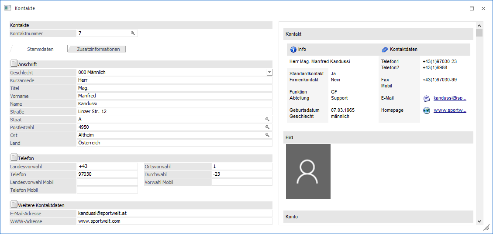
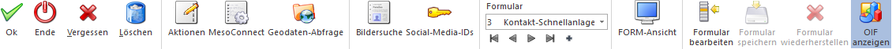

Dieses Fenster wird geöffnet, wenn im Kontaktestamm ein alternatives Formular zur Bearbeitung von Stammdaten ausgewählt wurde.
Hinweis
Bei Nutzung der FORM-Ansicht wird der Kontaktestamm in einem "Lesemodus" geöffnet, d.h. es können bestehende Kontakte aufgerufen und kontrolliert werden, ein Ändern bzw. eine Neuanlage ist nicht möglich. Hierfür muss zunächst mit Hilfe des Buttons "Editieren" der "Bearbeitungsmodus" aktiviert werden.
Ø Formular
Über die Auswahlbox "Formular" kann gewählt werden, in welcher Form der Stammdatensatz bearbeitet werden soll. Wenn die Option "0 - Allgemein" gewählt wird, dann wird wieder in die "Normalansicht" mit allen Eingabefeldern zurückgeschalten.
Hinweis
Die Definition der Formulare für die individuelle Gestaltung erfolgt im Programm WinLine START über den Menüpunkt "Vorlagen - Vorlagen Anlage - Individuelle Formulare". Das Ergebnis davon könnte z.B. so aussehen:


Ø Ok / Editieren
Durch Anwahl des Buttons "Ok" bzw. der Taste F5 werden die vorgenommenen Änderungen bzw. die Neuanlage abgespeichert.
Hinweis
Bei Nutzung der FORM-Ansicht wird zunächst der Button "Editieren" dargestellt. Durch dessen Anwahl gelangt man in den "Bearbeitungsmodus", in welchem der Button "Ok" zur Verfügung steht.
Ø Ende
Durch Anwahl des Buttons "Ende" bzw. der Taste ESC wird das Fenster geschlossen und alle nicht gespeicherten Eingaben verworfen.
Ø Vergessen
Durch Anwahl des Buttons "Vergessen" bzw. der Taste F4 wird die Anzeige des ausgewählten Kontakts beendet und der Fokus auf das Feld "Kontaktnummer" gesetzt. Alle vorgenommenen Änderungen werden dabei verworfen.
Ø Löschen
Mit Hilfe des Buttons "Löschen" kann der Kontakt gelöscht werden. Hierbei werden im Vorfeld folgende Prüfungen ausgeführt:
ü 1. Kontakt in mehreren
Wirtschaftsjahren vorhanden
Zunächst wird geprüft, ob der gleiche Kontakt in
weiteren Wirtschaftsjahren vorhanden ist. Hierbei werden die Datenfeld
"Kontaktnummer", "Anrede", "Titel", "Vorname" und "Name" für einen Abgleich
genutzt. Ist der Kontakt in mehreren Wirtschaftsjahren vorhanden, so kann die
Löschung im Anschluss in allen Wirtschaftsjahren oder nur im aktuellen
Wirtschaftsjahr erfolgen.
ü 2. Kontakt in Bewegungsdaten
vorhanden
Als nächstes wird geprüft, ob der Kontakt in Belegen oder
CRM-Fällen vorhanden ist und gefragt, ob eine Löschung (bei Vorhandensein)
definitiv durchgeführt werden soll.
Hinweis
Ist der Kontakt in mehreren Wirtschaftsjahren vorhanden, die Löschung wird aber nur im aktuellen Jahre durchgeführt, so wird der Kontakt aus Belegen, CRM-Fällen, Merklisten / Kampagnen, Archiveinträgen (Beschlagwortung) und Lagerorten nicht entfernt. Dieses ist auch der Fall, wenn eine Löschung in einem oder mehreren Wirtschaftsjahren nicht möglich ist (z.B. da der Name nicht gleichlautend ist).
Achtung
Handelt es sich um einen italienischen Mandanten (lt. Länderstamm in den FIBU-Parametern), so kann der erste Ansprechpartner zu einem Konto nicht gelöscht werden, da dieser für die Auswertung "Ritenuta D'Acconto" verwendet wird. Zusätzlich ist es nicht möglich den sogenannten Standard-Ansprechpartner oder Firmenkontakte zu löschen.
Ø Aktionen
Durch Anklicken des Buttons "Aktionen" wird ein Kontextmenü geöffnet, in dem verschiedene Aktionen zur Verfügung stehen, die für den Kontakt ausgeführt werden können.
Hinweis
Im Programm "Aktionen" (WinLine START - Parameter - Aktionen) können zu den jeweiligen Aktionen auch CRM-Aktionen bzw. CRM-Startpunkte definiert werden.
Die standardmäßig zur Verfügung stehenden Aktionen haben folgende Funktionen:
ü  eMail senden
eMail senden
Der Kontakt wird als
temporäre Kampagne an das Postausgangsbuch (Versandart "Einzel-Mail") zum
Erstellen und Versenden der E-Mail übergeben.
ü  Brief schreiben
Brief schreiben
Es wird das
Postausgangsbuch geöffnet, in dem für den Kontakt ein Serienbrief ausgegeben
werden kann.
ü  Fax
Fax
Es wird das Postausgangsbuch
geöffnet, in dem für den Kontakt ein Serienfax ausgegeben werden kann.
ü  Telefon 1 anrufen
Telefon 1 anrufen
Wird diese Aktion
gewählt und ist bei dem Kontakt auch eine Telefonnummer eingetragen, wird -
sofern die entsprechenden Voraussetzungen vorhanden sind - die Telefonnummer 1
gewählt.
ü  Telefon 2 anrufen
Telefon 2 anrufen
Wird diese Aktion
gewählt und ist bei dem Kontakt auch eine Telefonnummer eingetragen, wird -
sofern die entsprechenden Voraussetzungen vorhanden sind - die Telefonnummer 2
gewählt.
ü  Mobiltelefon anrufen
Mobiltelefon anrufen
Wird diese Aktion
gewählt und ist bei dem Kontakt auch eine Telefonnummer eingetragen, wird -
sofern die entsprechenden Voraussetzungen vorhanden sind - die
Mobiltelefonnummer gewählt.
ü  WWW Adresse aufrufen
WWW Adresse aufrufen
Wenn bei dem
Kontakt eine Internet-Adresse hinterlegt ist, wird der installierte Browser
geöffnet und automatisch die im Datensatz hinterlegte Adresse angesurft.
ü  Info aufrufen
Info aufrufen
Wenn es sich bei dem
Kontakt um einen Ansprechpartner oder einen Firmenkontakt eines Personenkontos
handelt, dann wird das Konto in der Konteninformation (WinLine INFO)
geöffnet.
Ø Meso-Connect
Durch Anklicken des Buttons "Meso-Connect" wird ein Kontextmenü geöffnet, in dem standardmäßig folgende "Meso-Connect"-Aktionen zur Verfügung stehen:
ü  Mail
Mail
An den Kontakt kann mit dieser
Aktion eine Mail geschickt werden. Es öffnet sich dazu das Meso-Connect-Mail
Fenster indem die Betreffzeile des Mails sowie ein Text angegeben werden kann.
Weiter besteht noch die Möglichkeit, ein Attachement anzuhängen. Voraussetzung
ist, dass bei dem Kontakt auch eine e-Mail-Adresse vorhanden ist.
ü  Kontakte
Kontakte
Mit dieser Aktion kann ein
Abgleich mit den Microsoft Outlook-Kontakten durchgeführt werden, wobei es 4
unterschiedliche Szenarien geben kann:
ü 1. Der Datensatz ist in Outlook noch nicht vorhanden. In diesem Fall wird der Kontakt neu angelegt.
ü 2. Der Datensatz ist in Outlook bereits vorhanden, in der WinLine wurde eine Änderung durchgeführt. In diesem Fall werden die veränderten Daten an Outlook übergeben.
ü 3. Der Datensatz ist in Outlook bereits vorhanden und wurde dort auch verändert. In diesem Fall werden die veränderten Daten in die WinLine übernommen.
ü 4. Der Datensatz ist in Outlook und in der WinLine bereits vorhanden und wurde auch in beiden bereits verändert. In diesem Fall erfolgt eine Frage, welche der Daten aktualisiert werden sollen.
ü  Excel
Excel
Damit wird das Programm Microsoft
Excel gestartet und die Adressdaten des Kontakts übergeben.
ü  Word-Tabelle
Word-Tabelle
Bei dieser Aktion wird
Microsoft Word gestartete und die Adressdaten des Kontakts übergeben.
ü  StarCalc
StarCalc
Sofern das Programm StarCalc
installiert ist, können die Daten in dieses Programm übergeben werden.
ü  StarWrite
StarWrite
Sofern das Programm StarWrite
installiert ist, können die Daten in dieses Programm übergeben werden.
ü  Wizard
Wizard
Über diesen Eintrag kann der
MESO-Connect Wizard aufgerufen werden, mit dem neue Aktionen erstellt bzw.
bestehende Aktionen verändert werden können.
Ø Geodaten-Abfrage
Mit Hilfe von Geodaten kann der Kontakt in der Geo Map des Power Reports dargestellt werden. Durch Anwahl des Buttons "Geodaten-Abfrage" werden hierfür die genauen Geodaten des Kontakts über das Internet ermittelt und abgespeichert. Die Ermittlung findet anhand der folgenden Parameter statt:
ü Straße
ü Postleitzahl
ü Ort
ü Land
Hinweis
Bei der Anlage eines Kontakts werden automatisch ungenaue Geodaten (durch eine in der WinLine vorhandene Koordinatentabelle) ermittelt und zugewiesen. Die Ermittlung findet anhand der folgenden Parameter statt:
ü Postleitzahl
ü Länderkennzeichen
Ø Bildersuche
Mit Hilfe dieses Buttons kann ein Bild für den Kontakt gesucht, ausgeschnitten und zugeordnet werden. Hierbei wird zunächst über ein Menü die Quelle des Bilds definiert. Folgende Varianten stehen zur Verfügung:
ü Bildersuche
Es wird das
Programm "Bildersuche" geöffnet.
ü Bildersuche - WinLine
Es wird
das Programm "Bilder in Datenbanken" geöffnet, über welches eine Grafik
ausgewählt werden kann.
ü Bildersuche - Datenträger
Es
wird der Öffnen-Dialog von Windows geöffnet, über welchen eine Grafik ausgewählt
werden kann.
Ø Social-Media-IDs
Durch Anwahl dieses Buttons wird das Fenster "Social Media-IDs" geöffnet. In diesem können die Social-Media-IDs des Kontakts hinterlegt werden.
Ø Formular
Über die Auswahlbox "Formular" kann gewählt werden, in welcher Form der Stammdatensatz bearbeitet werden soll. Wenn die Option "0 - Allgemein" gewählt wird, dann wird wieder in die "Normalansicht" mit allen Eingabefeldern zurückgeschalten.
Hinweis
Die Definition der Formulare für die individuelle Gestaltung erfolgt im Programm WinLine START über den Menüpunkt "Vorlagen - Vorlagen Anlage - Individuelle Formulare".
Ø VCR-Buttons
Über die so genannten VCR-Buttons, welche in jedem Register zur Verfügung stehen, kann durch Mausklick zwischen den Datensätzen geblättert werden.
ü  Damit kann der erste Datensatz angesprochen werden.
Damit kann der erste Datensatz angesprochen werden.
ü  Damit kann der vorherige Datensatz angesprochen werden.
Damit kann der vorherige Datensatz angesprochen werden.
ü  Damit kann der nächste Datensatz angesprochen.
Damit kann der nächste Datensatz angesprochen.
ü  Damit kann der letzte Datensatz angesprochen werden.
Damit kann der letzte Datensatz angesprochen werden.
ü  Damit wird die nächste freie Nummer für die Neuanlage gesucht.
Damit wird die nächste freie Nummer für die Neuanlage gesucht.
Ø FORM-Ansicht
Mit Hilfe dieses Buttons kann die sogenannte "FORM-Ansicht" aktiviert werden. Im Gegensatz zur klassischen Eingabe unterstützt diese folgende Funktionen:
ü Lese- und Bearbeitungsmodus
ü Responsive HTML-Design
ü Erweiterte Layout-Komponenten
Hinweis
Die FORM-Ansicht basiert immer auf der Definition des individuellen Formulars. Die Gestaltung des Layouts kann wiederum in der WinLine INFO über den Menüpunkt "FORM - Designer" erfolgen.
Ø Formular bearbeiten
Durch Anwahl des Buttons "Formular bearbeiten" wird das ausgewählte Formular (d.h. die Vorlage) in einen Bearbeitungsmodus versetzt (Felder können verschoben, entfernt oder neue einfügt werden). Durch eine erneute Anwahl des Buttons wird der Modus wieder verlassen.
Hinweis
Der Button kann nur angewählt werden, wenn das Objektrecht "bearbeiten" (oder höher) für das individuelle Formular vorhanden ist.
Ø Formular speichern
Mit Hilfe dieses Buttons können vorgenommene Formularänderungen gespeichert werden.
Ø Formular wiederherstellen
Wenn Formularänderungen getätigt wurden, dann kann durch Anwahl des Buttons "Formular wiederherstellen" das ursprüngliche Formular wiederhergestellt werden.
Ø OIF anzeigen
Mit Hilfe dieses Buttons kann der OIF-Bereich im rechten Bereich des Fensters aktiviert bzw. deaktiviert werden.
Hinweis
Eine Aktivierung ist nur möglich, wenn in der Vorlage die Option "OIF anzeigen" aktiviert wurde.